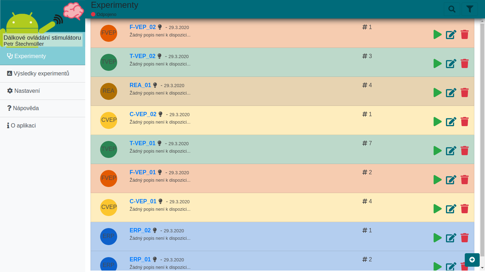

DiplomkaFrontend
Klientská část diplomové práce na téma: Návrh hardwarového stimulátoru pro neuroinformatické experimenty



Funkce
- Experimenty
- prohlížeč všech experimentů
- filtrování
- řazení
- seskupování
- nastavení zobrazené informace
- CRUD operace s experimenty
- tvorba nových experimentů
- ERP
- sekvence
- CVEP
- FVEP
- TVEP
- REA
- ERP
- prohlížeč všech experimentů
- Výsledky experimentů
- zobrazení
- smazání
- Přehrávač experimentů
- podporované experimenty:
- ERP
- sekvence
- CVEP
- FVEP
- TVEP
- REA
- ERP
- podporované experimenty:
- Podporované typy výstupů
- LED
- IMAGE
- AUDIO
- Podporované příkazy v konzoli:
Reboot- restartuje stimulátorDisplayClear- vymaže obsah displayeDisplayText- zapíše text na displayExperimentUpload- nahraje experiment do paměti stimulátoruExperimentInit- inicializuje nahraný experiment ve stimulátoruExperimentStart- odstartuje experimentExperimentStop- zastaví experimentExperimentClear- vymaže experiment z paměti stimulátoru
- Nastavení aplikace
- Stav připojených služeb
- Web Server
- Odpojení
- Restart
- Stimulator
- Připojení
- Odpojení
- Restart
- Aktualizace firmware
- Přehrávač zvuků a obrázků
- Web Server
- Konfigurace parametrů
- Přeheld experimentů
- Konfigurace serveru
- Stav připojených služeb